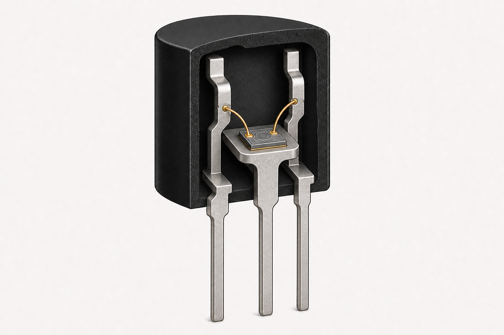

Forward-active prediction
With VBE forward biased and VCB reverse biased, electrons injected from the emitter should cross the thin base and be collected. Predict the signs of IC, IB, and IE before calculating them.
Emitter and collector contacts are lateral; the base contact is on the top surface. Voltages use the emitter as reference.

Representative construction
Realistic TO-92 reconstruction based on the Nexperia vertical BJT process. Lead frame and pin order vary by part.
Model boundary: doped regions are not optically visible. In the real die, emitter and base are formed at the top and collector current leaves through the backside. The solver below uses a distinct lateral teaching geometry.
Vertical discrete-device example distinct lateral 2D model
With VBE forward biased and VCB reverse biased, electrons injected from the emitter should cross the thin base and be collected. Predict the signs of IC, IB, and IE before calculating them.
Three VBE values are solved self-consistently from VCE = 0 to the selected collector voltage. A default desktop run can take several minutes.